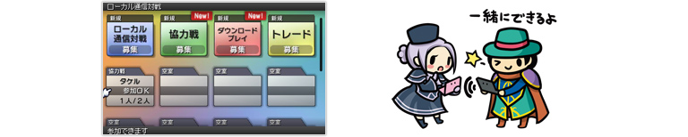
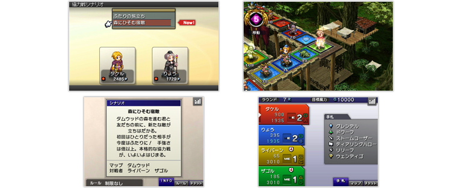
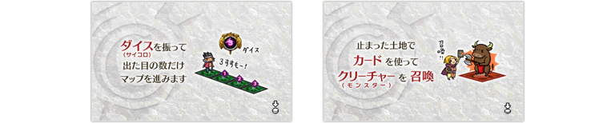
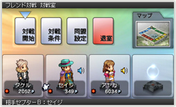
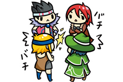
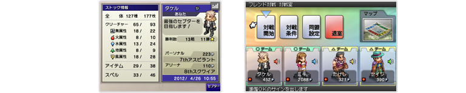
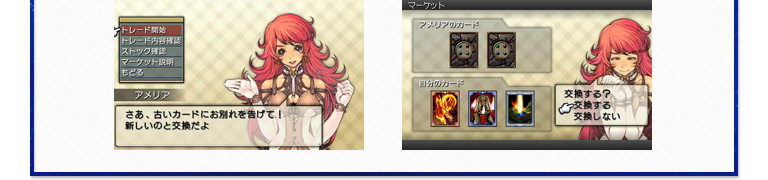

前ページまでは『カルドセプト』のストーリーモードを中心に基本となるシステムをご紹介しましたが、『カルドセプト』は対人戦のマルチプレイでさらに真価を発揮するソフトでもあります。そのため、通信機能が非常に充実していることも大きなポイントです。
まず紹介したいのは、「ローカル通信対戦」モードです。これは、近くにいるニンテンドー3DSを持っている友達と一緒に、対戦やカードのトレードなどを楽しめる機能です。

このモードでは、『カルドセプト』のゲームカードを持っている友達同士で、最大4人までの通信対戦をプレイできます。個人戦だけでなく、2人でチームを組んでの協力戦や、コンピューターを交えての対戦も可能です。使うたびに内容が変化する「おまかせブック」というものがあるので、すぐに遊びたいときでも大丈夫なのです。

さらに「ローカル通信対戦」モードでは、友達が『カルドセプト』のゲームカードを持っていなくても、その友達のニンテンドー3DSにゲームを転送して、一緒に「ダウンロードプレイ」を楽しむことができます。
「ダウンロードプレイ」では、自分と友達の2人で同盟を組んでコンピューターを倒す協力戦をプレイできます。「ブック」は自動的に用意されるものを使う仕組みなので、『カルドセプト』を遊んだことがない友達と一緒にプレイするのがおすすめです。
ちなみに「ダウンロードプレイ」の際には、「『カルドセプト』ってどんなゲーム？」と尋ねられたときに、すぐに友達に説明してくれるスライドまで用意されています。
ちなみに「ダウンロードプレイ」の際には、「『カルドセプト』ってどんなゲーム？」と尋ねられたときに、すぐに友達に説明してくれるスライドまで用意されています。

『カルドセプト』は、一緒に遊ぶ友達が多ければ多いほど、ますます楽しくなるタイプのゲームです。『カルドセプト』ファンの方は、ぜひこの「ダウンロードプレイ」を使って、その面白さをたくさんの友達に手取り足取り教えてあげましょう。
ニンテンドー3DSをインターネットに接続すれば、『カルドセプト』を遊んでいる全国のプレイヤーと対戦する「インターネット対戦」モードをプレイすることができます。
インターネット上に用意された「対戦フロア」に集まって、みんなで対戦プレイができます。「対戦フロア」は、プレイスタイルや熟練度に応じたものなどが用意されていて、さまざまなルールで遊ぶことができます。

あらかじめ登録しておいた友達と一緒に対戦プレイを楽しめます。『カルドセプト』を持っている友達がいたら、ぜひフレンド登録しておきましょう。

このモードには、対戦プレイだけでなく、アイコンで相手に気持ちを伝える「アイコンチャット」が用意されています。さらに「フレンド対戦」には、最大4人でおしゃべりしながらプレイできる「ボイスチャット」の機能まであります。

見知らぬ相手の予想外の戦略に驚いたり、自宅に居ながらにして気心の知れた友達とワイワイ楽しんだり、いつでも気軽に誰かと対戦ができるのは、非常にうれしいところです。特に「ボイスチャット」は、ゲームだけでなく会話での心理戦も楽しむことができるはずです。

ちなみに『カルドセプト』をインターネットに接続すると、それだけで1日1枚カードがもらえるようになります。もらえるカードの種類は毎日変わりますし、新しいマップやブック、ルールなどのデータも随時配信されるとのことですので、ぜひ毎日チェックしてみてください。
奥深い戦略の面白さや、いつも新鮮なプレイ体験を提供してくれるニンテンドー3DSソフト『カルドセプト』は、初心者にも上級者にもおすすめできるソフトです。
ストーリーモードだけでもお腹いっぱいのボリュームがありますし、ストーリーモードに登場したキャラクターとは、いつでも対戦プレイが可能です。
ストーリーモードだけでもお腹いっぱいのボリュームがありますし、ストーリーモードに登場したキャラクターとは、いつでも対戦プレイが可能です。
もちろん、これまでも熱狂的なファンを数多く生んできた『カルドセプト』シリーズの新作ですから、マルチプレイの面白さは、シングルプレイに輪をかけて折り紙つきです。ぜひみなさんも、この楽しさを味わってみてください。
